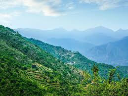
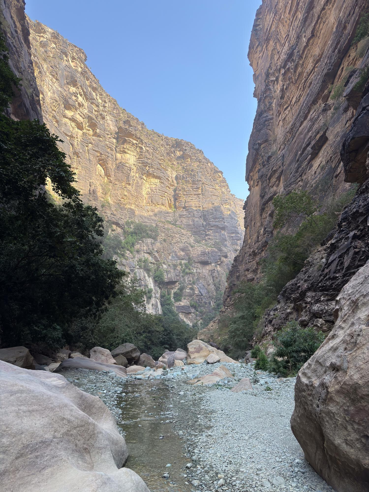
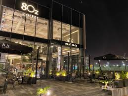
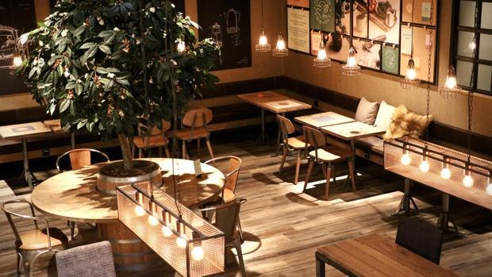
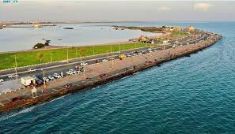
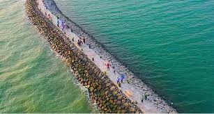
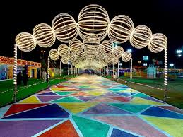
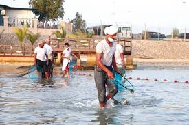

حالة الطقس في جيزان
🌤 أجواء غائمة جزئياً
الرطوبة: 70%
الرياح: 14 كم/س
تشتهر جيزان بأجوائها الدافئة نسبيًا بسبب موقعها الساحلي على البحر الأحمر، لذلك تعد مناسبة للرحلات البحرية وزيارة الجزر والواجهات البحرية.
جزر فرسان

تعد جزر فرسان من أجمل الوجهات البحرية في المملكة وتشتهر بمياهها الصافية والشعاب المرجانية.
تقع الجزر في البحر الأحمر وتضم مجموعة من الجزر الطبيعية التي تتميز بتنوعها البيئي والحياة البحرية الغنية، حيث يمكن للزوار الاستمتاع بالرحلات البحرية والغوص ومشاهدة الأسماك والشعاب المرجانية.
كما تعد الجزر مكاناً مثالياً للاسترخاء والاستمتاع بالطبيعة الساحلية الهادئة والمناظر الخلابة.
جبال فيفاء

تشتهر جبال فيفاء بمدرجاتها الزراعية الخضراء وطرقها الجبلية الجميلة.
تقع جبال فيفاء شرق منطقة جيزان وتتميز بتضاريسها الجبلية الفريدة التي تحيط بها القرى والمزارع التقليدية.
كما تشتهر المنطقة بزراعة البن والمحاصيل الزراعية المختلفة وتوفر إطلالات طبيعية مذهلة تجذب السياح ومحبي الطبيعة.
وادي لجب

وادي لجب أخدود صخري مذهل يوفر تجربة استكشاف ومغامرة لمحبي الطبيعة.
يتميز الوادي بجدرانه الصخرية المرتفعة التي تشكل ممرات ضيقة تجري بينها المياه وتحيط بها النباتات الخضراء.
يعد الوادي من أشهر المواقع الطبيعية في منطقة جيزان ويقصده الكثير من الزوار للاستمتاع بالمشي بين الصخور والتصوير واستكشاف الطبيعة الخلابة.
الكوفيهات


الحدايق

الواجهة البحرية بجازان
واجهة جميلة للتنزه والمشي وتتميز بمساحات خضراء وأماكن جلوس وإطلالات بحرية.
★ ★ ★ ★ ★
واجهة أمواج البحرية
مكان مناسب للعائلات والمشي والاستمتاع بأجواء البحر في جيزان.
★ ★ ★ ★ ★الفعاليات

مهرجان جازان
من أبرز فعاليات المنطقة ويضم عروضاً ثقافية وترفيهية وشعبية متنوعة.
★ ★ ★ ★ ★
مهرجان الحريد
فعالية سنوية مشهورة في فرسان مرتبطة بالبحر والتراث المحلي.
★ ★ ★ ★ ★